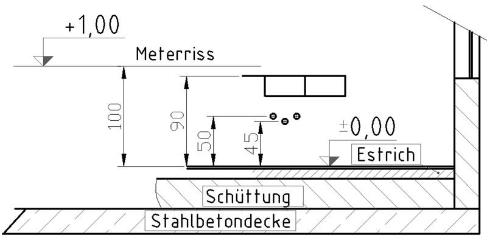
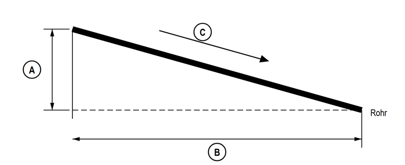
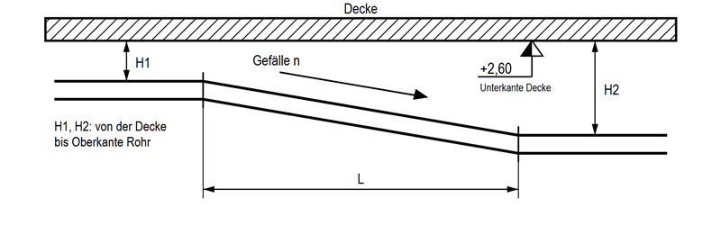
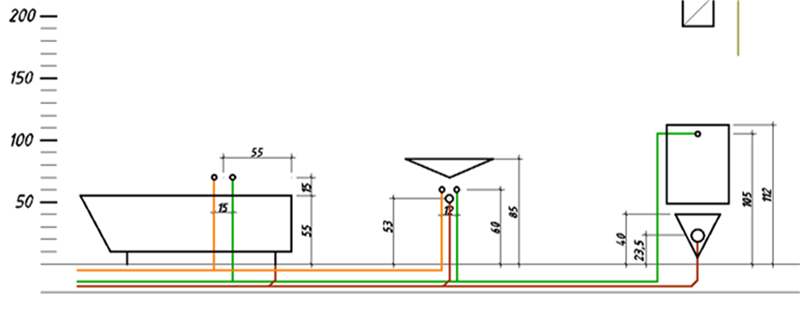
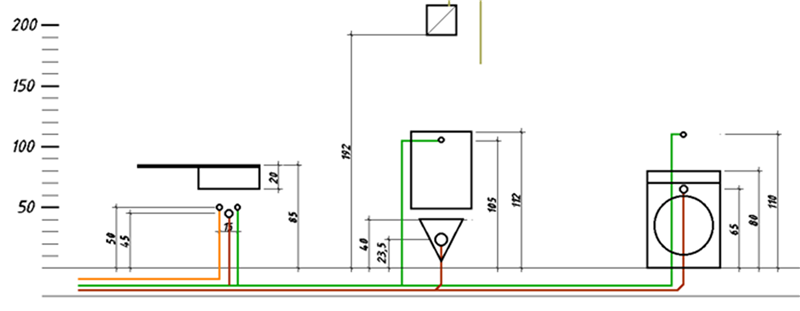

Meterriss, Steigung und Gefälle
Heute lernst du: was der Meterriss ist, wie du Höhen auf der Baustelle misst, wie ein Maßstab funktioniert und wie du das Gefälle von einer Leitung rechnest.
So arbeitest du: Lies zuerst den grauen Infokasten. Mach dann die Aufgaben darunter. Die Antworten findest du im Infokasten. Fertig? Tippe bei jeder Aufgabe auf „Prüfen“. Bessere deine Fehler aus.
Die Kästen mit Strichellinie und ★★★ („Mehr wissen“ und „Vertiefung“) sind erweiterte Aufgabenstellungen.
Infokasten A: Wo ist ein Meter? (Meterriss)
|
 Der Meterriss ist eine Markierung an der Wand. Er ist genau 1 Meter über der Oberkante vom fertigen Fußboden. Die Abkürzung dafür ist OKFFB (Oberkante fertiger Fußboden). Die Baufirma bringt den Meterriss an. Warum braucht man ihn? Wenn der Installateur die Rohre verlegt, ist der Fußboden noch nicht fertig. Man sieht nur den Rohfußboden (Boden aus Beton). Später kommen noch der Estrich (eine glatte Schicht aus Zement) und die Fliesen darauf. Der fertige Fußboden ist dann oft 10 bis 15 cm höher. Die Baufirma weiß aus dem Plan, wie hoch der fertige Fußboden wird. Darum kann sie den Meterriss schon vorher anzeichnen. Er ist in allen Räumen vom Stockwerk 1 m über dem späteren fertigen Fußboden. Merke: Alle Höhen misst du vom Meterriss, nie vom Rohfußboden. |
Aufgabe 1 ★ leicht
Lies Infokasten A. Stimmt der Satz? Kreuze an: richtig (R) oder falsch (F).
| Satz | R | F |
|---|---|---|
| a) Der Meterriss ist 1 m über dem fertigen Fußboden. | ||
| b) Der Meterriss ist 1 m über dem Rohfußboden. | ||
| c) Den Meterriss macht der Installateur. | ||
| d) OKFFB heißt: Oberkante fertiger Fußboden. |
Infokasten B: Wie hoch kommt der Anschluss? (Höhe vom Meterriss)
|
Im Plan steht die Höhe über dem fertigen Fußboden. Auf der Baustelle misst du aber vom Meterriss. So rechnest du um: Merke: Maß vom Meterriss = Höhe über Fußboden − 100 cm • Ist das Ergebnis plus (+): Der Anschluss ist über dem Meterriss. • Ist das Ergebnis minus (−): Der Anschluss ist unter dem Meterriss.
Tipp: Kleine Zahl minus große Zahl? Rechne groß minus klein (100 − 45 = 55) und schreib ein Minus davor: −55 cm. Rückwärts: Du kennst das Maß vom Meterriss und willst die Höhe über dem Fußboden? Höhe über Fußboden = 100 cm + Maß vom Meterriss Beispiel: −30 cm vom Meterriss → 100 cm − 30 cm = 70 cm über dem Fußboden. |
Aufgabe 2 ★★ mittel
c) Lies Infokasten B. Die Anschlüsse vom Waschtisch sind 60 cm über dem fertigen Fußboden. Wie weit unter dem Meterriss sind sie?
Aufgabe 3 ★ / ★★
Lies Infokasten B. Füll die leeren Felder aus. Schreib + oder − dazu.
| Anschluss | über Fußboden | vom Meterriss |
|---|---|---|
| ★ Spüle in der Küche | 50 cm | |
| ★ Wasserhahn im Keller | 120 cm | |
| ★ Heizkörper | 15 cm | |
| ★★ Brausearmatur | +15 cm | |
| ★★ Ausgussbecken | −35 cm |
Aufgabe 4 ★★ mittel – Auf der Baustelle
Im Bad fehlen noch Estrich und Fliesen. Laut Plan kommt die Brausearmatur 120 cm über den fertigen Fußboden.
a) Von wo misst du? Wie viel? Nach oben oder nach unten?
Dein Kollege misst 120 cm vom Rohfußboden. Später kommen noch 12 cm Estrich und Fliesen darauf.
b) Was ist dann falsch? Schreib den Satz fertig.
Die Armatur ist dann
Infokasten C: Wie kommt das Haus auf den Plan? (Maßstab)
|
Ein Haus ist groß. Damit es auf einen Plan passt, zeichnet man es kleiner. Wie viel kleiner, sagt der Maßstab. Alles wird gleich viel kleiner, die Verhältnisse bleiben gleich. • EM = Echtmaß: so groß ist es in echt (auf der Baustelle) • ZM = Zeichenmaß: so groß ist es am Plan • VZ = Verhältniszahl: die Zahl im Maßstab, z. B. 50 bei 1:50 1:50 heißt: 1 cm am Plan sind 50 cm in echt.
Beispiel: Maßstab 1:50, am Plan 4 cm → EM = 4 cm · 50 = 200 cm = 2 m Große Zahl hinten (1:50) = verkleinern. Große Zahl vorne (2:1) = vergrößern, für kleine Teile. 2:1 heißt: Am Plan ist alles doppelt so groß. Dann gilt: ZM = EM · 2. Merke: Rechne EM und ZM immer in derselben Einheit (cm). |
Aufgabe 5 ★ / ★★
Lies Infokasten C. Rechne die fehlenden Maße aus. Schreib die Rechnung dazu.
| Stufe | Maßstab | Echtmaß EM | Rechnung | Zeichenmaß ZM |
|---|---|---|---|---|
| ★ | 1:100 | 300 cm | ||
| ★ | 1:50 | 300 cm | ||
| ★ | 1:20 | 180 cm | ||
| ★★ | 1:50 | 7 cm | ||
| ★★ | 2:1 | 6 cm |
Aufgabe 6 ★★ mittel – Der Plan vom Bad
Du hast einen Plan vom Bad im Maßstab 1:50. Du misst mit dem Lineal am Plan.
a) Das Bad ist am Plan 5,2 cm lang. Wie lang ist es in echt? Schreib das Ergebnis in cm und in m.
b) Vom WC bis zum Waschtisch sind am Plan 1,6 cm. Wie weit ist das in echt?
c) ★★ Auf einem anderen Plan ist eine 400 cm lange Wand 8 cm lang. Welcher Maßstab ist das?
Infokasten D: Was heißt 1 Prozent? (Prozent)
|
1 % (1 Prozent) heißt: 1 von 100. Beim Gefälle heißt das: Auf 100 cm (= 1 m) Länge geht das Rohr 1 cm nach unten. • 1 % Gefälle → 1 cm pro 1 m • 2 % Gefälle → 2 cm pro 1 m • Bei 5 m Länge und 1 % geht das Rohr 5 · 1 cm = 5 cm nach unten. Merke: 1 % Gefälle = 1 cm pro 1 m. |
Aufgabe 7 ★ leicht
Lies Infokasten D. Wie viele cm geht das Rohr nach unten? Schreib das richtige Maß ins Feld.
Diese Maße gibt es: 1 cm – 2 cm – 3 cm – 5 cm – 6 cm – 10 cm
Achtung: 1 Maß bleibt übrig.
| Gefälle und Länge | so viel nach unten |
|---|---|
| 1 % auf 1 m | |
| 2 % auf 1 m | |
| 1 % auf 5 m | |
| 2 % auf 3 m | |
| 1,5 % auf 2 m |
Infokasten E: Warum braucht Abwasser Gefälle? (Gefälle)
|
Liegende Leitungen, vor allem Abwasserleitungen, müssen mit Gefälle verlegt werden. Das Rohr geht also leicht nach unten. Nur so kann das Wasser von selbst abfließen und die Leitung läuft leer. • Δh = Höhenunterschied: so viel tiefer ist das Ende vom Rohr (Δ heißt „Delta“) • L = Längenprojektion: die waagrechte Länge vom Rohr • n = Gefälle in Prozent (%). Im Bild zeigt ein Pfeil neben dem Rohr, wohin das Wasser fließt. Merke: n = Δh : L · 100 Beispiel: L = 4 m, Δh = 8 cm. Zuerst gleiche Einheit: L = 400 cm. n = 8 cm : 400 cm · 100 = 2 % Achtung: Δh und L immer in cm einsetzen. |
Aufgabe 8 ★ leicht
Lies Infokasten E. Was gehört zu A, B und C? Schreib den Begriff in die Tabelle.
Diese Begriffe gibt es: Gefälle n – Rohrdurchmesser – Höhenunterschied Δh – Längenprojektion L
Achtung: 1 Begriff bleibt übrig.

| Buchstabe | Begriff |
|---|---|
| A | |
| B | |
| C |
Aufgabe 9 ★ / ★★ – Gefälle rechnen
Lies Infokasten E. Rechne das Gefälle n aus. Schritt 1: L und Δh in cm. Schritt 2: in die Formel einsetzen.
Tipp: 1 m = 100 cm, also 3 m = 300 cm. Und 10 mm = 1 cm.
| L | Δh | Schritt 1: in cm | Schritt 2: n = Δh : L · 100 | n | |
|---|---|---|---|---|---|
| ★ a) | 3 m | 6 cm | |||
| ★ b) | 5 m | 5 cm | |||
| ★★ c) | 8 m | 12 cm | |||
| ★★ d) | 2,5 m | 50 mm |
Infokasten F: Höhenunterschied und Länge rechnen (Formel umstellen)
|
Aus der Formel für das Gefälle bekommst du zwei weitere Formeln:
Beispiel Δh: L = 6 m = 600 cm, n = 2 % → Δh = 2 · 600 : 100 = 12 cm Beispiel L: Δh = 10 cm, n = 2 % → L = 10 : 2 · 100 = 500 cm = 5 m Kontrolle mit Infokasten D: 2 % heißt 2 cm pro m. 6 m · 2 cm = 12 cm. Passt! Merke: Δh = n · L : 100 und L = Δh : n · 100 |
Aufgabe 10 ★★ mittel
Lies Infokasten F. Rechne zuerst L in cm um. Schreib die Rechnung und das Ergebnis mit Einheit.
| a) L = 4 m, n = 2 %. Δh = ? | |
| b) L = 7 m, n = 1,5 %. Δh = ? | |
| c) Δh = 9 cm, n = 3 %. L = ? | |
| d) Δh = 6 cm, n = 1,5 %. L = ? |
Aufgabe 11 ★★ mittel – Fehler finden
Ein Lehrling hat gerechnet. Nicht alles stimmt.
Kreuze an: richtig (R) oder falsch (F). Ist es falsch, rechne richtig.
| Rechnung vom Lehrling | R | F | richtig ist |
|---|---|---|---|
| L = 4 m, Δh = 6 cm: n = 6 : 4 · 100 = 150 % | |||
| L = 500 cm, n = 2 %: Δh = 2 · 500 : 100 = 10 cm | |||
| Δh = 4 cm, n = 2 %: L = 2 : 4 · 100 = 50 cm |
Was war beim ersten Fehler falsch? Schreib den Satz fertig.
Der Lehrling hat
Mehr wissen ★★★: Leitung an der Decke und Höhenkoten
|
Abgehängte Leitung: Eine Abwasserleitung hängt an der Decke. Sie braucht Gefälle. Darum ist das Ende vom Rohr weiter weg von der Decke als der Anfang. • H1 = Abstand Decke bis Oberkante Rohr am Anfang • H2 = am Ende Merke: H2 = H1 + Δh Höhenkote: Sie zeigt, wie hoch etwas liegt. Man zeichnet ein kleines Dreieck auf die Linie und schreibt die Höhe in Meter dazu. Schau im Bild bei Infokasten A: ±0,00 beim Fußboden, +1,00 beim Meterriss. Der fertige Fußboden im Erdgeschoss hat die Kote ±0,00, der Meterriss dort +1,00. Was tiefer liegt, hat ein Minus (z. B. Keller −2,60). Tiefer = die Zahl wird kleiner: von −1,10 um 0,29 m tiefer ist −1,39. Bei Koten rechnest du in Meter: 27 cm = 0,27 m. Gut zu wissen: 100 % Gefälle sind ein Winkel von 45°. |
Aufgabe 12 ★★★ Vertiefung – Leitung an der Decke
Eine Abwasserleitung hängt an der Decke. Am Anfang ist H1 = 15 cm. Das schräge Stück ist waagrecht L = 6 m lang. Das Gefälle ist n = 2 %.

a) Rechne Δh und H2 aus.
| Δh = | |
| H2 = |
b) Die Unterkante der Decke hat die Kote +2,60. Welche Kote hat die Oberkante vom Rohr am Ende? Tipp: H2 in m umrechnen.
Aufgabe 13 ★★★ Vertiefung – Die Grundleitung
Vor dem Haus liegt in der Erde eine Abwasserleitung (Grundleitung) aus Kunststoff. Sie geht von der Hauskante zum Schacht. Waagrecht sind es 14,5 m. Das Gefälle soll 2 % sein. An der Hauskante hat der Boden im Rohr (die Rohrsohle) die Kote −1,10.
a) Wie viel tiefer ist die Rohrsohle am Schacht? Welche Kote hat sie dort?
| Δh = | |
| Kote = |
b) Im Schacht hat die Rohrsohle vom Anschluss die Kote −1,45. Die Leitung soll genau dort ankommen. Passt das mit 2 %? Wenn nicht: Welches Gefälle brauchst du? Runde auf eine Kommastelle.
Aufgabe 14 c) ★★ mittel – Meterriss: Wand 3
Alle Maße in der Zeichnung sind vom fertigen Fußboden gemessen. Lies die Höhen in der Zeichnung ab und füll die Tabelle aus.

| Was? | Höhe vom Fußboden | Maß vom Meterriss |
|---|---|---|
| Badewanne: Rand | ||
| Badewanne: Anschlüsse (Tipp: 55 + 15) | ||
| Waschtisch: Oberkante | ||
| Waschtisch: Abfluss | ||
| WC-Spülkasten: Anschluss | ||
| WC-Spülkasten: Oberkante |
Aufgabe 14 d) ★★ mittel – Meterriss: Wand 4
Mach es genauso wie bei Wand 3.

| Was? | Höhe vom Fußboden | Maß vom Meterriss |
|---|---|---|
| Waschtisch: Kaltwasser | ||
| Waschtisch: Abfluss | ||
| Lüfter: Unterkante | ||
| WC: Abfluss | ||
| Waschmaschine: Wasser | ||
| Waschmaschine: Abfluss |
Aufgabe 15 ★★ mittel – Fachbegriffe
Fachbegriffe sind die Wörter, die man auf der Baustelle verwendet.
Steht der Fachbegriff da? Dann erkläre ihn mit eigenen Worten.
Steht die Erklärung da? Dann schreib den Fachbegriff dazu.
Diese Fachbegriffe gibt es: Echtmaß – Nennweite – OKFFB – Längenprojektion – Verhältniszahl – Wandstärke – Gefälle
Achtung: 2 Wörter bleiben übrig. Tipp: Lies die Infokästen A bis F.
| Fachbegriff | Erklärung |
|---|---|
| Meterriss | |
| Oberkante vom fertigen Fußboden. | |
| Rohfußboden | |
| So groß ist etwas in echt, auf der Baustelle. | |
| Maßstab | |
| Die Zahl im Maßstab, z. B. 50 bei 1:50. | |
| Zeichenmaß | |
| Das Rohr geht leicht nach unten, damit das Wasser abfließt. | |
| Höhenunterschied | |
| Die waagrechte Länge vom Rohr. |
Aufgabe 16 ★★★ schwer – Fachbegriffe auf Englisch
Wie heißt der Fachbegriff auf Englisch? Schreib das englische Wort in die Tabelle.
Diese Wörter gibt es: floor – slope – valve – wall – height – scale – ceiling – length – tap – plan – pipe – waste water
Achtung: 2 Wörter bleiben übrig.
| Deutsch | Englisch | Deutsch | Englisch |
|---|---|---|---|
| Fußboden | Gefälle | ||
| Wand | Höhe | ||
| Decke | Länge | ||
| Maßstab | Plan | ||
| Rohr | Abwasser |
Fertig? Tippe bei jeder Aufgabe auf „Prüfen“. Bessere deine Fehler aus.